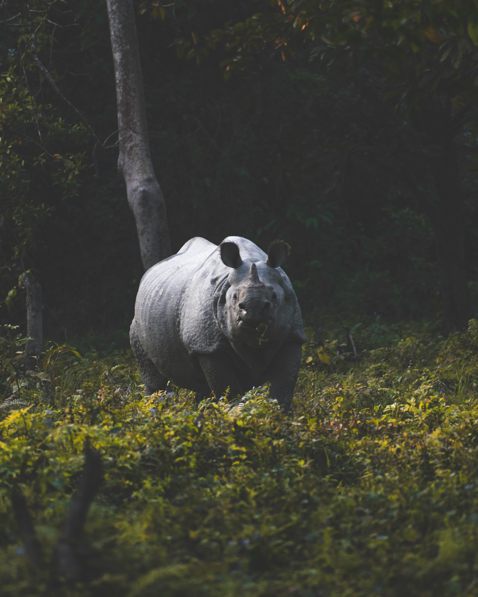
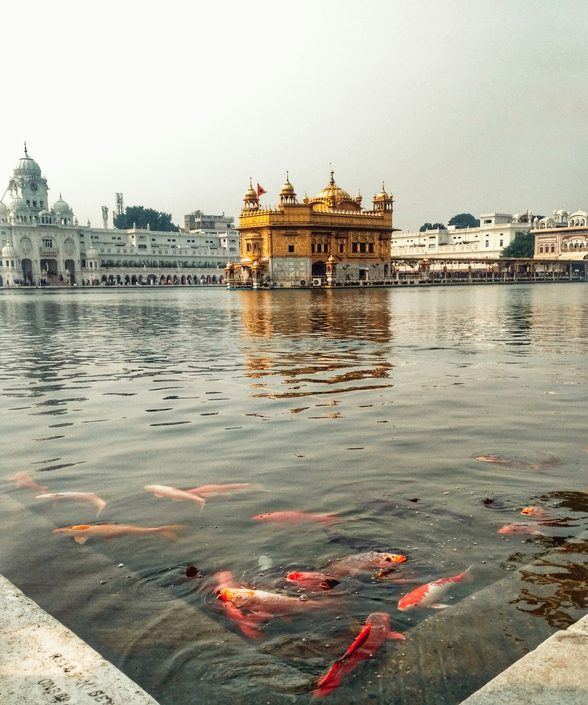
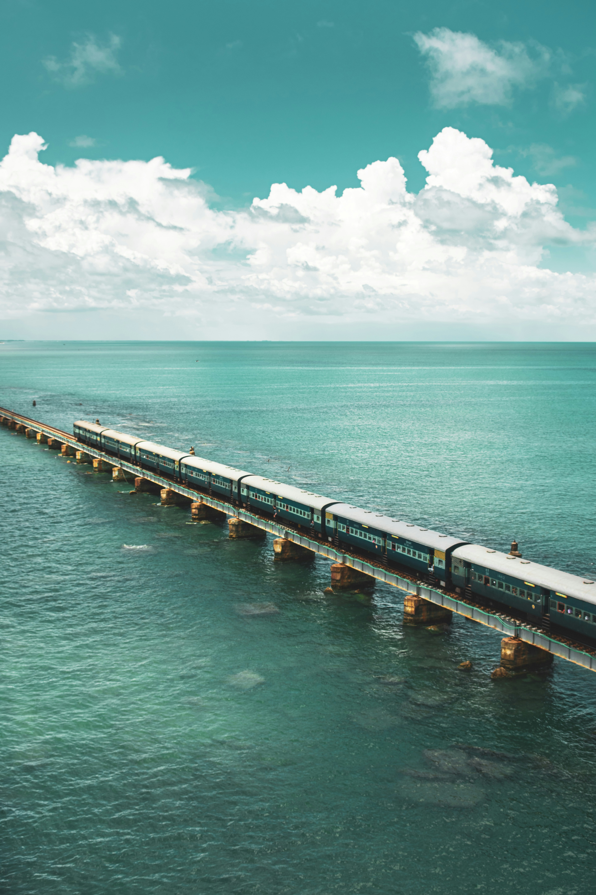

Himachal pradesh
Day 1-2: Shimla
- Visit Mall Road, Christ Church, and The Ridge.
- Explore Jakhu Temple and enjoy panoramic views.
Day 3-4: Manali
- Roam around Old Manali, visit Hadimba Devi Temple.
- Excursion to Solang Valley for adventure sports like paragliding.
Day 5-6: Dharamshala & McLeod Ganj
- Explore the Tibetan culture, visit Namgyal Monastery.
- Trek to Triund for stunning views of the Dhauladhar Range.

Uttar pradesh
Day 1-2: Agra
- Visit the iconic Taj Mahal, one of the Seven Wonders of the World.
- Explore the Agra Fort, a UNESCO World Heritage Site.
- Stroll through the bustling streets and markets of Agra.
Day 3-4: Varanasi
- Experience the spiritual atmosphere at the ghats of the Ganges River.
- Take a boat ride during sunrise or sunset to witness the rituals on the ghats.
- Explore the narrow lanes and visit the ancient temples of Varanasi.
Day 5-6: Lucknow
- Discover the rich heritage of Lucknow by visiting Bara Imambara and Chota Imambara.
- Indulge in the famous Lucknowi cuisine, especially kebabs and biryanis.
- Explore the bustling markets and shop for traditional Chikankari embroidery.

Rajasthan
Day 1-2: Jaipur
- Explore the majestic Amer Fort and enjoy an elephant ride.
- Visit the iconic Hawa Mahal (Palace of Winds) and City Palace.
- Shop for traditional Rajasthani crafts and textiles at local markets.
Day 3-4: Jodhpur
- Discover the imposing Mehrangarh Fort and Jaswant Thada.
- Explore the vibrant markets of the Old City and taste local delicacies.
- Take a desert safari to experience the Thar Desert and witness sunset views.
Day 5-6: Udaipur
- Visit the picturesque Lake Pichola and take a boat ride to Jag Mandir.
- Explore the majestic City Palace and enjoy the views from its terraces.
- Take a day trip to the beautiful Ranakpur Jain Temple complex.

Goa
Day 1-2: North Goa
- Relax at popular beaches like Calangute, Baga, and Anjuna.
- Explore the historic Fort Aguada and its lighthouse for panoramic views.
- Enjoy water sports like jet skiing, parasailing, and banana boat rides.
Day 3-4: South Goa
- Visit the serene beaches of Palolem, Agonda, and Colva for tranquility.
- Explore the Basilica of Bom Jesus and Se Cathedral in Old Goa.
- Take a cruise on the Mandovi River during sunset and enjoy Goan folk music.
Day 5-6: Panaji and Dudhsagar Falls
- Stroll around the vibrant streets of Panaji and visit the Fontainhas Latin Quarter.
- Take a day trip to Dudhsagar Falls and enjoy the breathtaking cascade.
- Experience the spice plantations and enjoy a traditional Goan lunch.

Andhra Pradesh
Day 1-2: Visakhapatnam (Vizag)
- Explore the serene beaches like RK Beach and Rishikonda Beach.
- Visit the Submarine Museum and Kailasagiri Hill for panoramic views.
- Experience the cultural richness at Simhachalam Temple and Ramakrishna Beach.
Day 3-4: Araku Valley
- Take a scenic train journey to Araku Valley through the Eastern Ghats.
- Explore the Borra Caves, known for their stalactite and stalagmite formations.
- Enjoy a visit to the tribal museum and coffee plantations in the valley.
Day 5-6: Vijayawada and Amaravati
- Visit the Kanaka Durga Temple and Undavalli Caves in Vijayawada.
- Explore the Amaravati Buddhist Heritage Site and Amareswara Temple.
- Take a boat ride on the Krishna River and witness the Prakasam Barrage.

Arunachal Pradesh
Day 1-2: Tawang
- Visit the famous Tawang Monastery, the largest in India.
- Explore the stunning natural beauty of Sela Pass and Madhuri Lake.
- Experience the local culture at Jaswant Garh War Memorial.
Day 3-4: Ziro
- Explore the picturesque Ziro Valley, a UNESCO World Heritage Site.
- Visit Apatani villages and witness their unique culture and traditions.
- Trek to Talley Valley Wildlife Sanctuary for nature and wildlife spotting.
Day 5-6: Itanagar and Bomdila
- Explore Itanagar, the capital city, and visit Ita Fort and Gompa Temple.
- Experience the peaceful ambiance of Bomdila Monastery and craft center.
- Enjoy scenic drives through the beautiful landscapes of Arunachal Pradesh.

Assam
Day 1-2: Guwahati
- Visit the Kamakhya Temple, one of the most revered shrines in Assam.
- Explore Assam State Museum and learn about the state's rich cultural heritage.
- Take a sunset cruise on the Brahmaputra River and enjoy scenic views.
Day 3-4: Kaziranga National Park
- Embark on thrilling elephant safaris and jeep safaris in Kaziranga.
- Spot the famous one-horned rhinoceros and other wildlife species.
- Visit the nearby Panbari Reserve Forest for birdwatching.
Day 5-6: Majuli Island
- Explore Majuli, the largest river island in the world.
- Experience the unique Vaishnavite culture and traditions of the island.
- Visit Satras (monasteries) and interact with the local Mishing tribe.

Bihar
Day 1-2: Bodh Gaya
- Visit Mahabodhi Temple, a UNESCO World Heritage Site and the place where Lord Buddha attained enlightenment.
- Explore Bodhi Tree, the sacred fig tree under which Buddha meditated.
- Visit Sujata Kuti, the place where Buddha was offered rice pudding by Sujata.
Day 3-4: Nalanda and Rajgir
- Explore Nalanda University ruins, an ancient center of learning and one of the world's first residential universities.
- Visit the Vishwa Shanti Stupa in Rajgir, offering panoramic views of the surrounding hills.
- Take a ropeway ride to Shanti Stupa and explore the nearby Venu Vana, where Buddha spent many rainy seasons.
Day 5-6: Patna
- Explore Patna Museum, showcasing a rich collection of artifacts and sculptures from ancient India.
- Visit Golghar, an architectural marvel built to store grains during the British Raj.
- Take a boat ride on the Ganges River and witness the evening Aarti at Mahatma Gandhi Setu.

Chhattisgarh
Day 1: Raipur
- Explore the Mahant Ghasidas Memorial Museum, showcasing the rich cultural heritage of Chhattisgarh.
- Visit the magnificent Mahamaya Temple, dedicated to the goddess Durga.
- Stroll through the bustling markets of Raipur and sample local delicacies.
Day 2: Bastar
- Explore the picturesque Chitrakote Falls, often referred to as the "Niagara Falls of India".
- Visit the ancient Danteshwari Temple in Dantewada, one of the Shakti Peethas.
- Experience the unique tribal culture of Bastar by interacting with local tribes like the Maria and Muria.
Day 3: Jagdalpur
- Explore the Bastar Palace, a fine example of Bastar architecture.
- Visit the Anthropological Museum to learn about the indigenous tribes of Chhattisgarh.
- Take a leisurely stroll through the lush greenery of Kanger Valley National Park.
Day 4: Sirpur
- Explore the ancient archaeological site of Sirpur, known for its beautifully carved temples.
- Visit the Laxman Temple, dedicated to Lord Vishnu, and marvel at its intricate carvings.
- Explore the Buddhist Vihara Complex and learn about the region's Buddhist heritage.

Gujarat
Day 1: Ahmedabad
- Explore the historic Sabarmati Ashram, where Mahatma Gandhi lived during India's freedom struggle.
- Visit the iconic Sidi Saiyyed Mosque known for its intricately carved stone lattice screens.
- Stroll through the vibrant Manek Chowk market and indulge in local street food.
Day 2: Dwarka
- Visit the ancient Dwarkadhish Temple, dedicated to Lord Krishna, one of the Char Dham pilgrimage sites.
- Explore the Nageshwar Jyotirlinga Temple, one of the 12 Jyotirlingas of Lord Shiva.
- Take a boat ride to Bet Dwarka island and visit the Rukmini Devi Temple.
Day 3: Somnath
- Visit the majestic Somnath Temple, one of the 12 Jyotirlingas of Lord Shiva, overlooking the Arabian Sea.
- Explore the Prabhas Patan Museum to learn about the history of Somnath and its significance.
- Witness the mesmerizing Aarti ceremony at the Somnath Temple in the evening.
Day 4: Gir National Park
- Embark on a thrilling safari at Gir National Park, home to the Asiatic lions.
- Explore the diverse flora and fauna of the park and spot other wildlife like leopards and deer.
- Visit the Gir Interpretation Zone at Devalia for a closer look at the wildlife.

Haryana
Day 1: Gurugram (Gurgaon)
- Explore Cyber Hub, a vibrant entertainment and dining destination in Gurugram.
- Visit Kingdom of Dreams, an entertainment and cultural complex showcasing Indian art, cuisine, and performances.
- Shop at Ambience Mall, one of the largest shopping malls in India.
Day 2: Faridabad
- Explore Surajkund, an ancient reservoir and crafts fair site known for its traditional crafts and cultural events.
- Visit the Raja Nahar Singh Palace, a historic palace built in the 19th century, now converted into a museum.
- Take a leisurely walk at Town Park and enjoy the serene surroundings.
Day 3: Kurukshetra
- Explore the Brahma Sarovar, a sacred water tank mentioned in Hindu scriptures, and take a holy dip.
- Visit the Kurukshetra Panorama and Science Centre to learn about the Mahabharata epic and its significance.
- Explore Jyotisar, a historic site where Lord Krishna delivered the Bhagavad Gita to Arjuna.
Day 4: Panchkula
- Explore Morni Hills, a beautiful hill station known for its scenic beauty, trekking trails, and boating in the lake.
- Visit the Cactus Garden, one of the largest collections of cacti and succulents in Asia.
- Enjoy a relaxing evening at Sukhna Lake, a man-made reservoir offering boating and stunning sunset views.
Jharkhand
Day 1: Ranchi
- Explore Rock Garden, a scenic park featuring rock sculptures and waterfalls.
- Visit Jagannath Temple, a famous Hindu temple known for its architectural beauty.
- Take a boat ride at Ranchi Lake and enjoy the picturesque surroundings.
Day 2: Hazaribagh
- Explore Hazaribagh Wildlife Sanctuary, home to various wildlife species including tigers, leopards, and deer.
- Visit Hazaribagh Lake, a serene lake offering boating and birdwatching opportunities.
- Take a trek to Canary Hill for panoramic views of the surrounding landscape.
Day 3: Dhanbad
- Explore Shakti Mandir, a popular Hindu temple dedicated to Goddess Durga.
- Visit the Jharia Coalfield, one of the largest coal reserves in India, and learn about the coal mining industry.
- Take a stroll at Maithon Dam and enjoy the scenic beauty of the reservoir.
Day 4: Deoghar
- Visit Baba Baidyanath Temple, one of the twelve Jyotirlingas in India, and seek blessings.
- Explore Nandan Pahar, a beautiful hill offering panoramic views of the town and surrounding areas.
- Take a dip in Satsang Vihar, a natural hot water spring known for its therapeutic properties.

Karnataka
Day 1-2: Bengaluru (Bangalore)
- Explore Lalbagh Botanical Garden, known for its diverse plant species and glasshouse.
- Visit Tipu Sultan's Summer Palace, an architectural marvel showcasing the rich history of Karnataka.
- Explore Bangalore Palace, a majestic palace with Tudor-style architecture and lush gardens.
- Experience the vibrant nightlife at MG Road and Brigade Road.
Day 3-4: Mysuru (Mysore)
- Visit Mysore Palace, the grandiose residence of the Wodeyar dynasty, renowned for its exquisite architecture and royal heritage.
- Explore the sprawling Brindavan Gardens, famous for its musical fountain show and scenic beauty.
- Take a trip to Chamundi Hill to visit Chamundeshwari Temple and enjoy panoramic views of Mysore city.
Day 5-6: Coorg (Kodagu)
- Explore Abbey Falls, a picturesque waterfall surrounded by coffee plantations and lush greenery.
- Visit Dubare Elephant Camp for an unforgettable experience with elephants, including bathing and feeding sessions.
- Take a nature walk in Nagarhole National Park to spot wildlife such as elephants, tigers, and deer.
Day 7: Hampi
- Explore the UNESCO World Heritage Site of Hampi, known for its ancient ruins, temples, and monuments.
- Visit Virupaksha Temple, Hampi Bazaar, and the iconic stone chariot at Vittala Temple Complex.
- Witness the stunning sunset at Hemakuta Hill overlooking the ruins of Hampi.

Kerala
Day 1-2: Kochi (Cochin)
- Explore Fort Kochi, known for its colonial-era buildings, Chinese fishing nets, and vibrant art scene.
- Visit Mattancherry Palace (Dutch Palace) to admire its traditional Kerala architecture and murals.
- Witness a Kathakali performance, a traditional dance form of Kerala, at a local cultural center.
- Take a leisurely stroll along Marine Drive and enjoy the scenic views of the Arabian Sea.
Day 3-4: Munnar
- Explore the lush tea plantations and scenic landscapes of Munnar.
- Visit Eravikulam National Park to spot the endangered Nilgiri Tahr and enjoy panoramic views from Rajamalai viewpoint.
- Take a walk through the tea estates and learn about the tea-making process at a tea factory.
- Visit the picturesque Mattupetty Dam and Kundala Lake for boating and scenic views.
Day 5-6: Alleppey (Alappuzha)
- Experience a houseboat cruise through the serene backwaters of Alleppey, also known as the Venice of the East.
- Enjoy traditional Kerala cuisine served on board the houseboat and witness the beauty of the backwaters.
- Explore the Alleppey beach and relax amidst the golden sands and swaying palm trees.
- Visit the Alleppey lighthouse for panoramic views of the coastline and backwaters.
Day 7: Thiruvananthapuram (Trivandrum)
- Visit Padmanabhaswamy Temple, an iconic landmark known for its intricate Dravidian architecture and spiritual significance.
- Explore Napier Museum and Art Gallery to see a vast collection of ancient artifacts, paintings, and sculptures.
- Relax at Kovalam Beach, known for its pristine sands, clear waters, and water sports activities.
- Visit the Vizhinjam Lighthouse for panoramic views of the Arabian Sea and surrounding coastline.

Madhya Pradesh
Day 1-2: Bhopal
- Explore the historic city of Bhopal, visiting landmarks such as Taj-ul-Masajid, one of the largest mosques in India.
- Discover the rich cultural heritage at Bharat Bhavan, an arts complex showcasing various forms of contemporary and traditional Indian art.
- Visit Upper Lake and Lower Lake, also known as Bhojtal, for boating and scenic views of the surrounding hills.
- Explore the ancient rock shelters and prehistoric cave paintings at Bhimbetka, a UNESCO World Heritage Site.
Day 3-4: Khajuraho
- Explore the famous Khajuraho Group of Monuments, renowned for their intricate sculptures and stunning architectural details.
- Visit the Western Group of Temples, including Kandariya Mahadeva Temple, Lakshmana Temple, and Vishvanatha Temple.
- Explore the Eastern Group of Temples, which includes the Jain temples of Parsvanath, Adinath, and Shantinath.
- Attend the Sound and Light Show at the Western Group of Temples to learn about the history and mythology of Khajuraho.
Day 5-6: Gwalior
- Explore the majestic Gwalior Fort, one of the largest forts in India, known for its stunning architecture and historical significance.
- Visit the Sas Bahu Temples, dedicated to Lord Vishnu, known for their intricate carvings and architectural beauty.
- Explore Jai Vilas Palace and Museum, showcasing the rich cultural heritage and opulent lifestyle of the Scindia dynasty.
- Visit the Tomb of Tansen, dedicated to the legendary musician Tansen, known for its beautiful architecture and serene ambiance.
Day 7: Orchha
- Explore the historical town of Orchha, known for its majestic palaces, temples, and cenotaphs.
- Visit Orchha Fort Complex, comprising Jahangir Mahal, Raj Mahal, and Ram Raja Temple, known for their architectural splendor.
- Explore Chaturbhuj Temple, dedicated to Lord Vishnu, known for its massive structure and beautiful frescoes.
- Witness the evening Aarti ceremony at Ram Raja Temple, a unique experience blending spirituality and cultural heritage.

Maharashtra
Day 1-2: Mumbai
- Explore the Gateway of India and take a ferry ride to Elephanta Caves, a UNESCO World Heritage Site.
- Visit the iconic Taj Mahal Palace Hotel and enjoy a stroll along Marine Drive, also known as the Queen's Necklace.
- Discover the vibrant street markets of Colaba Causeway and Linking Road for shopping and street food.
- Explore the historic Chhatrapati Shivaji Maharaj Vastu Sangrahalaya (formerly Prince of Wales Museum) to learn about Indian art and history.
Day 3-4: Pune
- Visit Aga Khan Palace, a historical landmark associated with Mahatma Gandhi and the Indian freedom movement.
- Explore Shaniwar Wada, the majestic fort palace of the Peshwas, known for its architectural grandeur and historical significance.
- Take a trip to Sinhagad Fort for panoramic views of the surrounding landscape and experience the rich history of the Maratha Empire.
- Stroll through the bustling lanes of Pune's old town, exploring traditional markets, temples, and historic buildings.
Day 5-6: Aurangabad
- Explore the UNESCO World Heritage Sites of Ajanta and Ellora Caves, famous for their ancient rock-cut Buddhist, Hindu, and Jain temples and monasteries.
- Visit Bibi Ka Maqbara, also known as the Mini Taj Mahal, built by Emperor Aurangzeb in memory of his wife.
- Explore Daulatabad Fort, an impressive hill fortress known for its intricate defense systems and stunning views.
- Discover the ancient rock-cut caves of Aurangabad, including Aurangabad Caves and Pitalkhora Caves.
Day 7: Lonavala and Khandala
- Explore the scenic hill stations of Lonavala and Khandala, known for their lush greenery, picturesque landscapes, and beautiful waterfalls.
- Visit popular attractions such as Bhushi Dam, Tiger's Leap, and Karla Caves, known for their ancient Buddhist rock-cut caves.
- Enjoy trekking, nature walks, and scenic drives amidst the serene surroundings of the Western Ghats.
- Savor local delicacies such as chikki (sweet snack) and vada pav (street food) at local eateries.

Manipur
Day 1-2: Imphal
- Visit Kangla Fort, the ancient seat of power for the Manipuri kings, and explore its historical significance.
- Explore the vibrant Ima Keithel (Mother's Market), one of Asia's largest all-women markets, offering a wide range of local products.
- Discover the serene Loktak Lake, known for its floating islands (phumdis) and the unique Keibul Lamjao National Park, home to the endangered sangai deer.
- Visit the War Cemetery and the India Peace Memorial commemorating soldiers who lost their lives during World War II.
Day 3-4: Moirang and Moreh
- Take a trip to Moirang and explore the INA Martyrs Memorial Complex, dedicated to the Indian National Army's struggle for independence.
- Visit the ancient temple of Lord Thangjing in Moirang and learn about its religious and cultural significance.
- Travel to Moreh, a bustling border town near Myanmar, and experience its vibrant cross-border trade and cultural exchanges.
- Explore the picturesque landscapes and lush greenery surrounding Moirang and Moreh, ideal for nature walks and photography.
Day 5-6: Ukhrul and Shirui
- Explore the scenic town of Ukhrul, known for its picturesque valleys, lush greenery, and unique Tangkhul Naga culture.
- Visit the picturesque Shirui village and trek to the enchanting Shirui Kashong Peak, famous for the rare Shirui Lily found only in this region.
- Experience the rich cultural heritage of the Tangkhul Naga tribe through traditional dances, music, and handicrafts.
- Explore the beautiful Khayang Waterfall and enjoy a picnic amidst the serene surroundings of Ukhrul district.
Day 7: Keibul Lamjao National Park
- Embark on a wildlife safari in Keibul Lamjao National Park, the world's only floating national park, to spot the endangered sangai deer and other wildlife species.
- Explore the park's unique ecosystem, including floating phumdis, marshlands, and aquatic vegetation.
- Enjoy birdwatching, nature photography, and boating in the tranquil waters of Loktak Lake within the national park.
- Learn about the conservation efforts and challenges facing the sangai deer and the fragile ecosystem of Keibul Lamjao National Park.

Meghalaya
Day 1-2: Shillong
- Explore the picturesque Umiam Lake, also known as Barapani Lake, and enjoy water activities like boating and kayaking.
- Visit the Don Bosco Museum to learn about the rich cultural heritage and tribal history of Meghalaya and northeastern India.
- Discover the unique living root bridges of Cherrapunji (Sohra) and marvel at their natural beauty and engineering.
- Explore the local markets of Shillong, such as Police Bazar, for shopping souvenirs, handicrafts, and traditional Khasi attire.
Day 3-4: Cherrapunji (Sohra)
- Visit the Nohkalikai Falls, one of the tallest plunge waterfalls in India, and enjoy breathtaking views of the surrounding landscape.
- Explore the Mawsmai Cave, known for its limestone formations and thrilling passages, offering a unique caving experience.
- Take a trek to the Double Decker Living Root Bridge in Nongriat village and immerse yourself in the natural beauty of the lush forests.
- Experience the rich biodiversity of the Mawphlang Sacred Forest and learn about Khasi indigenous beliefs and conservation practices.
Day 5-6: Dawki and Mawlynnong
- Experience the crystal-clear waters of Umngot River in Dawki and enjoy boating and kayaking amidst stunning natural surroundings.
- Visit the Dawki Bridge, also known as the Indo-Bangladesh Friendship Bridge, and enjoy panoramic views of the international border.
- Explore the cleanest village in Asia, Mawlynnong, known for its eco-friendly practices, living root bridges, and scenic beauty.
- Take a trek to the nearby Riwai Village to witness the balancing rock, a natural geological wonder, and enjoy panoramic views of Bangladesh plains.
Day 7: Jaintia Hills
- Explore the Jaintia Hills region and visit attractions like Krang Suri Waterfalls, a hidden gem with turquoise blue waters amidst lush greenery.
- Experience the thrill of cave exploration at places like Krem Mawmluh Cave, Krem Liat Prah Cave, and Krem Dam Cave in the Jaintia Hills.
- Learn about the unique culture and traditions of the Jaintia tribe through interactions with locals and visits to traditional villages.
- Enjoy a leisurely drive through the scenic countryside of Meghalaya, dotted with lush forests, rolling hills, and picturesque villages.

Mizoram
Day 1: Aizawl
- Explore the vibrant city of Aizawl, the capital of Mizoram, and visit attractions like the Mizoram State Museum and Durtlang Hills for panoramic views of the city.
- Discover the unique culture and heritage of the Mizo people by exploring local markets, such as Bara Bazar, and sampling traditional Mizo cuisine.
- Visit the iconic Solomon's Temple, a popular landmark known for its stunning architecture and panoramic views of the surrounding landscape.
Day 2-3: Lunglei
- Travel to Lunglei, a picturesque town nestled amidst rolling hills and lush greenery, and explore attractions like the Saikuti Hall and Khawnglung Wildlife Sanctuary.
- Take a trek to the scenic Lung-lei viewpoint and enjoy breathtaking views of the surrounding landscapes, including the Tiau River valley.
- Visit the remote village of Tuirial and experience the warm hospitality of the local Mizo community while learning about their customs and way of life.
Day 4-5: Champhai
- Explore Champhai, located near the India-Myanmar border, and visit attractions like the Murlen National Park, famous for its rich biodiversity and scenic beauty.
- Take a stroll through the quaint town of Champhai and visit local markets to shop for traditional Mizo handicrafts, handwoven textiles, and bamboo products.
- Visit the scenic village of Zokhawthar and enjoy panoramic views of the Myanmar plains from the Indo-Myanmar Friendship Gate.
Day 6: Serchhip
- Explore the town of Serchhip and visit attractions like the Vantawng Falls, one of the highest waterfalls in Mizoram, cascading down from a height of over 750 feet.
- Take a nature walk through the lush forests surrounding Serchhip and enjoy birdwatching and wildlife spotting opportunities.
- Visit the picturesque Tamdil Lake, surrounded by dense forests and rolling hills, and enjoy boating and picnicking amidst serene natural surroundings.

Nagaland
Day 1: Kohima
- Explore the capital city of Kohima and visit historical sites like the Kohima War Cemetery and the State Museum, which showcases Naga tribal artifacts and history.
- Discover the unique heritage of the Naga tribes by visiting the Naga Heritage Village Kisama, where you can experience traditional Naga culture, arts, and crafts.
- Take a stroll through the local markets in Kohima, such as the bustling New Market, to shop for traditional Naga shawls, handicrafts, and local delicacies.
Day 2-3: Dimapur
- Travel to Dimapur, the largest city in Nagaland, and explore historical sites like the Kachari Ruins, which date back to the 10th century, and the Triple Falls, a scenic waterfall located near the city.
- Visit the Diezephe Craft Village to witness traditional Naga craftsmanship, including handloom weaving, bamboo work, and wood carving, and interact with local artisans.
- Take a day trip to the Intangki Wildlife Sanctuary, located near Dimapur, to explore the rich biodiversity of Nagaland and enjoy trekking, birdwatching, and wildlife spotting.
Day 4-5: Mokokchung
- Explore the picturesque town of Mokokchung, known for its scenic beauty and vibrant Naga culture, and visit attractions like the Longkhum Village, where you can experience traditional Naga village life.
- Attend a traditional Naga festival, such as the Moatsu Festival or the Tsungremong Festival, which showcase Naga music, dance, and rituals, and offer a glimpse into Naga cultural traditions.
- Take a trek to the scenic Dzukou Valley, known for its breathtaking landscapes and seasonal flower blooms, and enjoy camping amidst pristine natural surroundings.
Day 6: Tuensang
- Travel to Tuensang, located in eastern Nagaland, and visit attractions like the Changsangmongko Village, known for its traditional Naga architecture and terraced fields.
- Explore the nearby villages of Longtrok and Chilise, where you can interact with local Naga tribes like the Chang, Sangtam, and Yimchunger, and learn about their customs and way of life.
- Take a nature walk through the scenic countryside surrounding Tuensang and enjoy panoramic views of the rolling hills and lush green valleys of Nagaland.

Odisha
Day 1-2: Bhubaneswar
- Explore Bhubaneswar, the capital city of Odisha, known as the "City of Temples," and visit iconic temples like the Lingaraja Temple, Mukteshwar Temple, and Rajarani Temple.
- Discover the ancient caves of Udayagiri and Khandagiri, carved by Jain monks in the 2nd century BCE, and explore the intricately carved rock-cut caves and inscriptions.
- Visit the Odisha State Museum to learn about the rich history, art, and culture of Odisha through its collection of sculptures, artifacts, and archaeological finds.
Day 3-4: Puri
- Travel to Puri, a sacred city on the coast of Odisha, and visit the famous Jagannath Temple, dedicated to Lord Jagannath, Balabhadra, and Subhadra, and participate in the daily rituals and ceremonies.
- Relax on the golden sands of Puri Beach, known for its pristine beauty and vibrant atmosphere, and enjoy activities like swimming, sunbathing, and beachside dining.
- Explore the nearby town of Konark and visit the UNESCO World Heritage Site of Konark Sun Temple, an architectural masterpiece known for its intricate stone carvings and sculptures.
Day 5-6: Konark and Chilika Lake
- Take a day trip to Chilika Lake, Asia's largest brackish water lagoon, and explore its diverse ecosystem of mangrove forests, wetlands, and bird sanctuaries, home to migratory birds like flamingos and pelicans.
- Visit the picturesque village of Raghurajpur, known for its traditional Pattachitra paintings and Gotipua dance performances, and interact with local artists to learn about their craft.
- Explore the ancient maritime heritage of Odisha at the Maritime Museum in Cuttack, which showcases the state's rich seafaring history through exhibits, artifacts, and models of traditional boats.

Punjab
Day 1-2: Amritsar
- Begin your journey in Amritsar, the spiritual and cultural heart of Punjab, and visit the iconic Golden Temple, a symbol of Sikhism and one of the most revered religious sites in the world.
- Experience the spiritual ambiance of the Golden Temple complex, participate in the mesmerizing rituals at Harmandir Sahib, and enjoy a langar (community meal) at the temple's dining hall.
- Explore the historic Jallianwala Bagh, a memorial garden commemorating the tragic massacre of innocent civilians by British troops in 1919, and learn about India's struggle for independence.
Day 3-4: Chandigarh
- Travel to Chandigarh, the modern and well-planned capital of Punjab and Haryana, designed by renowned architect Le Corbusier, and explore its architectural landmarks like the Capitol Complex, Rock Garden, and Sukhna Lake.
- Visit the Government Museum and Art Gallery to admire a diverse collection of art, artifacts, and archaeological finds, including Gandhara sculptures, miniature paintings, and decorative arts.
- Discover the vibrant street food scene of Chandigarh and indulge in local delicacies like chole bhature, paneer tikka, and kulfi falooda at popular eateries and food joints.
Day 5-6: Amritsar
- Return to Amritsar and explore the colorful bazaars and bustling streets of the old city, known for their vibrant atmosphere, traditional crafts, and delicious street food.
- Take a heritage walk through the narrow lanes of Amritsar's historic neighborhoods, such as Katra Ahluwalia and Guru Bazaar, and admire the colonial-era architecture and cultural landmarks.
- Visit the Partition Museum to learn about the tragic events of the Partition of India in 1947 and explore exhibits, oral histories, and personal stories of those affected by this historic event.

Sikkim
Day 1-2: Gangtok
- Start your journey in Gangtok, the capital city of Sikkim, and explore its scenic beauty, cultural heritage, and spiritual sites.
- Visit the Enchey Monastery, an ancient Buddhist monastery known for its stunning architecture, colorful murals, and religious significance.
- Explore the Namgyal Institute of Tibetology, a renowned research institute and museum dedicated to Tibetan and Buddhist studies, and admire its impressive collection of artifacts, manuscripts, and religious relics.
- Take a cable car ride to the picturesque Tashi View Point and enjoy panoramic views of the surrounding mountains, valleys, and forests.
Day 3-4: Lachung and Yumthang Valley
- Embark on a scenic drive from Gangtok to Lachung, a charming mountain village nestled in the Himalayas, and explore its natural beauty, tranquil ambiance, and warm hospitality.
- Visit the Yumthang Valley, also known as the "Valley of Flowers," famous for its breathtaking landscapes, colorful alpine flowers, and hot springs.
- Explore the picturesque villages of Lachung and Yumthang, interact with the local Lepcha and Tibetan communities, and learn about their culture, traditions, and way of life.
- Take a leisurely walk along the banks of the Lachung River, enjoy the pristine beauty of the surrounding forests and meadows, and immerse yourself in the tranquility of nature.
Day 5-6: Pelling and West Sikkim
- Travel to Pelling, a charming hill station in West Sikkim, known for its stunning views of the Kanchenjunga range, lush greenery, and serene monasteries.
- Visit the Pemayangtse Monastery, one of the oldest and most important monasteries in Sikkim, and admire its exquisite architecture, ancient relics, and sacred artworks.
- Explore the Rabdentse Ruins, the former capital of the Kingdom of Sikkim, and discover its ancient monuments, stone carvings, and archaeological treasures.
- Take a nature walk to the beautiful Khecheopalri Lake, a sacred lake revered by Buddhists and Hindus alike for its pristine waters, tranquil ambiance, and spiritual significance.

Tamil Nadu
Day 1-2: Chennai
- Begin your journey in Chennai, the capital city of Tamil Nadu, and explore its rich cultural heritage, vibrant markets, and iconic landmarks.
- Visit Marina Beach, one of the longest urban beaches in the world, and enjoy a leisurely stroll along its sandy shores, witnessing stunning sunsets and bustling activities.
- Explore Fort St. George, a historic fortress built by the British East India Company, and discover its colonial architecture, museums, and memorials.
- Discover the vibrant street food scene of Chennai by sampling local delicacies like dosa, idli, vada, and filter coffee at popular eateries and food stalls.
Day 3-4: Madurai
- Travel to Madurai, one of the oldest continuously inhabited cities in the world, known for its rich cultural heritage, magnificent temples, and bustling markets.
- Visit the Meenakshi Amman Temple, a historic Hindu temple dedicated to Goddess Meenakshi and Lord Sundareswarar, and marvel at its towering gopurams, intricate carvings, and sacred rituals.
- Explore the bustling streets of the Madurai market, known for its vibrant atmosphere, aromatic spices, colorful textiles, and traditional handicrafts.
- Attend the evening prayer ceremony at the Meenakshi Amman Temple, known as the "Aarti," and witness the mesmerizing rituals, music, and devotional fervor.
Day 5-6: Kodaikanal
- Travel to Kodaikanal, a picturesque hill station nestled in the Western Ghats, known for its scenic beauty, lush forests, and serene lakes.
- Explore the lush greenery and pristine landscapes of Kodaikanal by taking a leisurely boat ride on the tranquil Kodaikanal Lake and enjoying panoramic views of the surrounding hills.
- Visit the Coaker's Walk, a scenic promenade offering breathtaking views of the lush valleys, misty mountains, and rolling hills of Kodaikanal.
- Embark on a trek to the beautiful Bear Shola Falls, nestled amidst dense forests and cascading waters, and enjoy a refreshing dip in its cool waters.

Telangana
Day 1-2: Hyderabad
- Begin your journey in Hyderabad, the capital city of Telangana, and explore its rich history, culture, and heritage.
- Visit the iconic Charminar, a historic monument and mosque, and marvel at its stunning architecture, intricate carvings, and bustling markets.
- Explore the grandeur of the Golconda Fort, a majestic fortress dating back to the medieval era, and discover its fascinating history, secret passages, and panoramic views.
- Indulge in the delicious Hyderabadi cuisine, known for its aromatic biryanis, flavorful kebabs, and delectable desserts, at popular restaurants and street food stalls.
Day 3-4: Warangal
- Travel to Warangal, a historic city known for its ancient temples, forts, and architectural marvels.
- Explore the majestic Warangal Fort, a UNESCO World Heritage Site, and admire its imposing stone gateways, intricate carvings, and serene surroundings.
- Visit the iconic Thousand Pillar Temple, dedicated to Lord Shiva, Vishnu, and Surya, and marvel at its exquisite architecture, intricately carved pillars, and sacred shrines.
- Explore the picturesque Ramappa Lake and Ramappa Temple, known for their scenic beauty, ancient architecture, and tranquil ambiance.
Day 5-6: Nizamabad
- Travel to Nizamabad, a historic city known for its rich culture, heritage, and architectural wonders.
- Explore the Nizamabad Fort, an ancient fortress built by the Rashtrakuta dynasty, and discover its historic significance, architectural splendor, and panoramic views of the city.
- Visit the beautiful Pocharam Wildlife Sanctuary, a haven for nature lovers and wildlife enthusiasts, and explore its diverse flora, fauna, and scenic landscapes.
- Discover the vibrant culture and traditions of Telangana by attending local festivals, cultural events, and traditional performances in Nizamabad.

Tripura
Day 1: Agartala
- Begin your journey in Agartala, the capital city of Tripura, and explore its vibrant culture, history, and heritage.
- Visit the majestic Ujjayanta Palace, a beautiful royal palace built by Maharaja Radha Kishore Manikya Bahadur, and admire its impressive architecture, landscaped gardens, and rich collection of artifacts.
- Explore the historic Kunjaban Palace, a former royal residence surrounded by lush greenery, and enjoy panoramic views of Agartala city and its surroundings.
- Stroll through the bustling markets of Agartala and shop for traditional handicrafts, handloom products, and local souvenirs.
Day 2: Unakoti
- Travel to Unakoti, an ancient pilgrimage site known for its rock-cut sculptures, rock carvings, and archaeological wonders.
- Explore the mesmerizing rock-cut sculptures and carvings at Unakoti, including the iconic images of Shiva, Ganesha, and other Hindu deities, carved on the rocky cliffs.
- Enjoy trekking and nature walks amidst the scenic landscapes, lush forests, and cascading waterfalls of Unakoti, and experience the tranquility and serenity of the surroundings.
- Learn about the myths, legends, and folklore associated with the rock-cut sculptures of Unakoti from local guides and historians.
Day 3: Neermahal
- Visit Neermahal, a beautiful water palace located in the middle of Rudrasagar Lake, and explore its exquisite architecture, scenic beauty, and royal charm.
- Take a boat ride on Rudrasagar Lake to reach Neermahal and admire the picturesque views of the palace, surrounded by water on all sides.
- Explore the opulent interiors of Neermahal, including its grand halls, royal chambers, and intricately carved balconies, and learn about its fascinating history and architectural significance.
- Enjoy recreational activities such as boating, fishing, and birdwatching on Rudrasagar Lake, and relax amidst the serene and tranquil ambiance of the surroundings.

Uttarakhand
Day 1-2: Nainital
- Arrive in Nainital, a picturesque hill station nestled in the Kumaon region of Uttarakhand, and check into your hotel.
- Explore the scenic beauty of Nainital by visiting Naini Lake, Mall Road, and Snow View Point, and enjoy boating and shopping in the bustling markets.
- Visit Naina Devi Temple, Eco Cave Gardens, and Nainital Zoo to experience the rich cultural heritage and biodiversity of the region.
- Take a cable car ride to reach Tiffin Top and enjoy panoramic views of the Himalayas and surrounding valleys.
Day 3-4: Mussoorie
- Travel to Mussoorie, known as the "Queen of Hills," and check into your hotel overlooking the majestic Himalayan ranges.
- Explore the famous attractions of Mussoorie, including Gun Hill, Kempty Falls, Company Garden, and Camel's Back Road, and enjoy breathtaking views of the Himalayas.
- Take a stroll along the Mall Road and shop for souvenirs, handicrafts, and local delicacies at the vibrant markets of Mussoorie.
- Visit the historic Landour Clock Tower, Lal Tibba, and Mussoorie Christ Church to delve into the colonial charm and heritage of the hill station.
Day 5-6: Rishikesh & Haridwar
- Travel to Rishikesh, the "Yoga Capital of the World," and explore its spiritual heritage, ancient temples, and serene ashrams.
- Participate in yoga and meditation sessions, attend the Ganga Aarti at Triveni Ghat, and seek blessings at the famous temples of Rishikesh, including Neelkanth Mahadev Temple and Bharat Mandir.
- Embark on an adventurous journey by indulging in activities like river rafting, bungee jumping, and trekking in the scenic landscapes of Rishikesh.
- Visit Haridwar, one of the holiest cities in India, and take a dip in the sacred waters of the Ganges at Har Ki Pauri, followed by a visit to Mansa Devi Temple and Chandi Devi Temple.

West Bengal
Day 1-2: Kolkata
- Arrive in Kolkata, the cultural capital of India, and check into your hotel.
- Explore the vibrant streets of Kolkata by visiting iconic landmarks such as Victoria Memorial, Howrah Bridge, and Indian Museum.
- Experience the rich cultural heritage of the city by taking a walk through College Street, known for its bookstores, and visit Mother House, the headquarters of Missionaries of Charity founded by Mother Teresa.
- Savor the delectable street food of Kolkata, including Kathi Rolls, Puchkas, and Rosogollas, at local markets like Park Street and New Market.
Day 3-4: Darjeeling
- Travel to Darjeeling, the "Queen of the Hills," and check into your hotel overlooking the breathtaking tea gardens and snow-capped peaks.
- Enjoy a scenic ride on the Darjeeling Himalayan Railway, also known as the Toy Train, and witness the mesmerizing sunrise over the majestic Kanchenjunga from Tiger Hill.
- Visit the Himalayan Mountaineering Institute, Padmaja Naidu Himalayan Zoological Park, and Peace Pagoda to learn about the rich biodiversity and cultural heritage of Darjeeling.
- Explore the local markets of Darjeeling and shop for tea, handicrafts, and Tibetan artifacts at places like Mall Road and Chowrasta.
Day 5-6: Sundarbans
- Embark on an adventurous journey to the Sundarbans, the largest mangrove forest in the world, and check into your eco-resort.
- Take a thrilling boat safari through the dense mangrove creeks of Sundarbans and spot the Royal Bengal Tiger, crocodiles, and various bird species in their natural habitat.
- Visit Sajnekhali Wildlife Sanctuary, Sudhanyakhali Watch Tower, and Dobanki Watch Tower to explore the diverse flora and fauna of Sundarbans.
- Experience the unique culture and lifestyle of the local communities living in the Sundarbans, and indulge in traditional Bengali cuisine prepared with fresh seafood.

Andaman & Nicobar
Day 1-2: Port Blair
- Arrive in Port Blair, the capital city of the Andaman and Nicobar Islands, and check into your hotel.
- Visit Cellular Jail, also known as Kala Pani, and explore its museum to learn about India's freedom struggle.
- Take a ferry ride to Ross Island and explore its historical ruins and British-era buildings.
- Enjoy a leisurely stroll at Corbyn's Cove Beach and witness the beautiful sunset.
Day 3-4: Havelock Island
- Travel to Havelock Island by ferry and check into your beach resort.
- Relax on the pristine beaches of Havelock, including Radhanagar Beach, ranked as one of the best beaches in Asia.
- Indulge in water activities such as snorkeling, scuba diving, and sea walking to explore the vibrant marine life and coral reefs.
- Visit Elephant Beach for adventurous activities like banana boat rides and jet skiing.
Day 5-6: Neil Island
- Take a ferry to Neil Island and check into your cozy resort.
- Explore the serene beaches of Neil Island, including Bharatpur Beach and Laxmanpur Beach, known for their crystal-clear waters and scenic beauty.
- Snorkel at the Natural Bridge, a unique rock formation formed by coral reefs over time.
- Enjoy a leisurely bicycle ride around Neil Island to witness its laid-back island life and lush greenery.
Daman & Diu
Day 1: Explore Daman
- Arrive in Daman and check into your hotel.
- Visit the historic Diu Fort, a UNESCO World Heritage Site, and explore its ramparts and architecture.
- Stroll along the picturesque Diu Beach and enjoy the serene coastal views.
- Explore St. Paul's Church, an old colonial church known for its beautiful architecture and serene atmosphere.
Day 2: Discover Diu
- Explore the Naida Caves, ancient caves with unique rock formations and picturesque surroundings.
- Visit the Gangeshwar Temple, dedicated to Lord Shiva, and witness the unique rock formations amidst the sea.
- Relax at Ghoghla Beach, one of the largest beaches in Diu, and indulge in water sports activities.
- Experience the vibrant nightlife of Diu by visiting local bars and restaurants.
Day 3: Leisure and Departure
- Spend the day at leisure, exploring local markets and shopping for souvenirs.
- Enjoy a leisurely stroll along the promenade and soak in the serene coastal atmosphere.
- Depart from Daman & Diu with beautiful memories of your trip.

Jammu & Kashmir
Day 1-2: Srinagar
- Arrive in Srinagar and check into your houseboat or hotel.
- Take a shikara ride on Dal Lake and explore its floating gardens and markets.
- Visit the Mughal Gardens, including Shalimar Bagh, Nishat Bagh, and Chashme Shahi.
- Explore the old city of Srinagar, including the historic Jama Masjid and Shah Hamdan's shrine.
- Enjoy a scenic drive to Gulmarg and indulge in activities like skiing, snowboarding, and gondola rides.
Day 3-4: Gulmarg
- Explore the picturesque meadows of Gulmarg and enjoy panoramic views of the surrounding mountains.
- Take a trek to Khilanmarg or Apharwat Peak for breathtaking views of the Himalayas.
- Visit the Gulmarg Biosphere Reserve and spot various species of flora and fauna.
- Indulge in adventure activities like mountain biking, horse riding, and golfing.
Day 5-6: Pahalgam
- Travel to Pahalgam, known as the 'Valley of Shepherds'.
- Explore Betaab Valley, named after the Bollywood movie Betaab, and enjoy its scenic beauty.
- Visit Aru Valley and Chandanwari and embark on scenic hikes amidst lush greenery and snow-capped peaks.
- Take a pony ride to Baisaran, also known as Mini Switzerland, and enjoy its serene landscapes.
Day 7: Departure
- Depart from Jammu & Kashmir with unforgettable memories of the stunning landscapes and warm hospitality.
Lakshadweep
Day 1: Arrival in Agatti
- Arrive at Agatti Airport, the gateway to Lakshadweep.
- Transfer to your resort or guesthouse.
- Relax and unwind on the pristine beaches of Agatti.
Day 2: Agatti Island Exploration
- Explore Agatti Island on foot or rent a bicycle or scooter.
- Visit the Agatti Island Beach, known for its crystal-clear waters and coral reefs.
- Indulge in water sports activities like snorkeling, scuba diving, and kayaking.
Day 3-4: Kadmat Island
- Take a ferry or seaplane to Kadmat Island.
- Relax on the pristine beaches and enjoy sunbathing and swimming.
- Explore the marine life by snorkeling or diving in the coral reefs surrounding Kadmat Island.
- Take a leisurely walk around the island and interact with the friendly locals.
Day 5-6: Bangaram Island
- Transfer to Bangaram Island, known for its scenic beauty and vibrant marine life.
- Relax on the white sandy beaches and enjoy the breathtaking sunset views.
- Go snorkeling or diving in the clear waters of Bangaram to explore the colorful coral reefs.
- Indulge in beachside dining and savor delicious seafood delicacies.
Day 7: Departure from Agatti
- Return to Agatti Island by ferry or seaplane.
- Depart from Agatti Airport with unforgettable memories of your Lakshadweep adventure.

Chandigarh
Day 1: Arrival and Sukhna Lake
- Arrive in Chandigarh and check into your hotel.
- Visit Sukhna Lake, a serene reservoir known for boating and evening walks.
- Enjoy the scenic views and participate in various recreational activities around the lake.
Day 2: Rock Garden and Rose Garden
- Explore the Rock Garden, a unique sculpture garden built from industrial and urban waste.
- Marvel at the artistic creations made from recycled materials.
- Visit the Zakir Hussain Rose Garden, Asia's largest rose garden, featuring thousands of rose varieties.
- Stroll through the garden and admire the colorful blooms and fragrant roses.
Day 3: Capitol Complex and Shopping
- Explore the Capitol Complex, a UNESCO World Heritage Site designed by architect Le Corbusier.
- Visit the Open Hand Monument, symbolizing peace and unity.
- Explore the Government Museum and Art Gallery to learn about Chandigarh's history and culture.
- Indulge in shopping at Sector 17 Plaza, Chandigarh's main shopping district, known for its shops and eateries.
Day 4: Leisure and Departure
- Enjoy a leisurely morning exploring local markets or relaxing in your hotel.
- Depart from Chandigarh with fond memories of your trip.

Delhi
Day 1: Old Delhi Exploration
- Start your day with a visit to the Red Fort, a UNESCO World Heritage Site known for its Mughal architecture.
- Explore Chandni Chowk, one of the oldest and busiest markets in Delhi, known for its narrow lanes and diverse street food.
- Visit Jama Masjid, India's largest mosque, located in the heart of Old Delhi.
- End your day with a rickshaw ride through the bustling streets of Old Delhi.
Day 2: New Delhi Sightseeing
- Explore India Gate, a war memorial dedicated to Indian soldiers who died during World War I.
- Visit Rashtrapati Bhavan, the official residence of the President of India, and admire its grand architecture.
- Explore Humayun's Tomb, a UNESCO World Heritage Site and one of the best-preserved Mughal monuments in Delhi.
- Explore Qutub Minar, the tallest brick minaret in the world, surrounded by several other historical monuments.
Day 3: Cultural and Spiritual Experience
- Visit Akshardham Temple, a magnificent Hindu temple complex known for its intricate architecture and cultural exhibits.
- Explore the serene Lotus Temple, known for its distinctive lotus-shaped architecture and peaceful ambiance.
- Take a heritage walk through Mehrauli Archaeological Park, home to several ancient monuments and ruins.
- Experience the vibrant atmosphere of Dilli Haat, an open-air market showcasing handicrafts and cuisines from different states of India.
Day 4: Museums and Shopping
- Visit the National Museum, one of the largest museums in India, showcasing a vast collection of art, artifacts, and archaeological exhibits.
- Explore the National Gallery of Modern Art, housing a rich collection of modern and contemporary Indian art.
- Indulge in shopping at DLF Emporio or Select Citywalk, two popular shopping malls offering a wide range of luxury brands and retail outlets.
- End your day with a delicious meal at one of Delhi's famous restaurants, sampling North Indian cuisine or international delicacies.

Ladakh
Day 1: Arrival in Leh
- Arrive in Leh and acclimatize to the high altitude.
- Take a leisurely walk around Leh town and explore the local market.
- Visit Shanti Stupa for panoramic views of the surrounding mountains and the sunset.
Day 2: Monastery Tour
- Visit Shey Palace and Shey Monastery, known for its giant gold-plated statue of Lord Buddha.
- Explore Thiksey Monastery, perched on a hilltop and resembling the Potala Palace in Lhasa, Tibet.
- Continue to Hemis Monastery, the largest and wealthiest monastery in Ladakh, known for its annual Hemis Festival.
Day 3: Pangong Lake Excursion
- Embark on a full-day excursion to Pangong Lake, one of the most iconic destinations in Ladakh.
- Enjoy the scenic drive through Chang La, one of the highest motorable passes in the world.
- Take in the breathtaking views of the azure blue lake surrounded by rugged mountains.
- Explore the surroundings, enjoy a picnic lunch, and take memorable photographs.
Day 4: Nubra Valley Exploration
- Drive to Nubra Valley via Khardung La, the highest motorable pass in the world.
- Visit Diskit Monastery and enjoy panoramic views of the valley from the monastery.
- Experience a camel safari on the double-humped Bactrian camels in the sand dunes of Hunder.
- Stay overnight in a traditional homestay or camp in the Nubra Valley.
Day 5: Return to Leh
- Drive back to Leh, enjoying the scenic views along the way.
- Visit the Hall of Fame, a museum dedicated to the Indian soldiers who fought in the Kargil War.
- Explore the local markets for souvenirs and handicrafts.
- Relax and unwind in Leh, reflecting on the memorable experiences of Ladakh.

Puducherry
Day 1: Explore French Quarter
- Begin your day with a visit to Promenade Beach, a popular spot for morning walks and relaxation.
- Stroll through the French Quarter, also known as the White Town, and admire the colonial architecture.
- Visit Aurobindo Ashram, founded by Sri Aurobindo, and explore its serene surroundings.
- Explore Auroville, an experimental township known for its sustainability and spiritual community.
Day 2: Heritage Tour
- Visit the Basilica of the Sacred Heart of Jesus, a stunning Gothic-style church adorned with stained glass windows.
- Explore the Bharathi Park, a lush green space with statues of Mahatma Gandhi and Joan of Arc.
- Discover the Puducherry Museum, showcasing artifacts from the region's history, culture, and art.
- Enjoy a leisurely walk along the waterfront at Rock Beach and indulge in street food.
Day 3: Leisure and Relaxation
- Relax and rejuvenate at Serenity Beach or Paradise Beach, known for their tranquil atmosphere.
- Try water sports activities such as kayaking, paddleboarding, or surfing.
- Explore the local markets and boutique stores for souvenirs and handicrafts.
- Experience the vibrant nightlife of Puducherry with live music performances and beachside cafes.
Day 4: Culinary Delights
- Indulge in a culinary tour of Puducherry, sampling French, Tamil, and international cuisines.
- Visit local eateries and restaurants to try traditional dishes like seafood curry, dosa, and French pastries.
- Explore the famous Goubert Market for fresh produce, spices, and snacks.
- End your day with a sunset cruise on the backwaters of Puducherry, offering scenic views of the coastline.